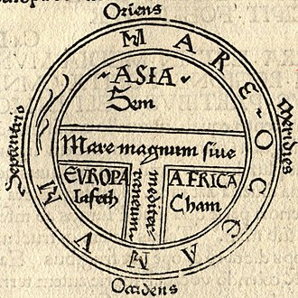

The whitewashing and appropriation of the Jewish identity
The corrupt merchants and multinational capitalists of the world
are well aware whose land is special. Israel profits from the diamond trade but the diamond mines are not in their land.
"I am black and beautiful, O daughters of Jerusalem, like the tents of Kedar, like the curtains of Solomon." -Song of Solomon 1:5
"
His head is as the most fine gold, his locks are bushy, and black as a raven." -Song of Solomon 5:11
Paternal and maternal haplogroups are genetic markers
that reveal your paternal and maternal lineages
respectively. The different haplogroups correspond to
different gene pools of different ancestors, when group of
people diverge into different directions and environments,
that is when the haplogroups form “subclades” and mutate
differently (single-nucleotide polymorphism mutation).
The “Bantu” people are primarily of haplogroup E,
specifically E1B1A, this represents a divergence from
E1B1B which is found in north Africa, the Mediterranean
and in high proportions among jewish communities in
Europe. The KhoeKhoe, San, Twa
related groups carry the paternal haplogroups A and B
which are exclusive to Africa, the historical range of these
haplogroups used to stretch from the Western Cape as far
north as Sudan/Ethiopia, the gene is present in their descendants. Paternal haplogroups A, B are distinct from E which correlates with the linguistic differences between them.
Some western academics make the fictional claim that
there was a “Bantu expansion” owhere those with E1B1A appeared somewhere in central
Africa out of nowhere and then their population suddenly exploded
significantly. Oral history, Archaeology, Genetics and the Old Testament all show that narrative to be false.
A false division has been created between North Africa (Lower Africa) and "sub-saharan" Africa (Kemet)
The story of the land that the Nile flows from has been told by foreign colonisers. The victors write his story, we must know our story.
Scripture will tell you that the Hebrews left Egypt and
entered the land of Canaan.
Canaan was a son of Ham and the
'Hamites' (Cham / Kemet) referred to African people. The Book of Jubilees (excluded
from roman descended bibles) describes very explicitly The
allocation of land to the different descendants of Noah
(Shem, Ham, Japheth) was described in the Book of Jubilees that was excluded by the Romans from their Bible. and allocates Africa to the sons of
Ham. When Noah allocated land to his 3 sons he was doing
so not only to his sons but also their descendants since you
inherit land from your parents.
The Hebrews after leaving Egypt enter the land of Canaan,
the Canaanites are the Khoi and their related groups, this is
where the derogatory term “Hottentot” comes from because
the Hebrew/semitic scripts do not have vowels and
Hottentot is simply Hitite with dutch phonetics, the Hitites
are described as part of the Canaanites in scripture. The
dutch and the huguenots knew whose land they were in,
this is why they named many places in the country after
locations in the bible.
This is also why during the “great” trek some of the boers
known as the “Jerusalemgangers” split off towards Namibia
because they believed that Jerusalem was not that far from
them and that they were the chosen Israelites.
If you ask the fake jews what are the genetic markers for
the Canaanites or the Hebrews they will not be able to tell
you in a way that makes sense, that is because they are
lying.
The "red" sea that Moses crossed was in fact a "Sea of Reeds" based on the original Hebrew.
There used to be a large
lake in the region of Sudan,
north of whats currently
called “Darfur” (Previously called DarDaju = "Home of Da-Jew" in Arabic).
Some academics will try to
convince you that this was
6000 years ago,
when the entire Sahara was
green but proper
investigation will show it
was relatively recent, the Greeks were aware of it when they colonised Egypt and renamed the lake to “Lake
Ptolemy” and described it as a marsh i.e “sea of reeds”. In
South Sudan there is currently an impassable marsh called
“Al-Sudd”, it is evident that the region between Al
Sudd and Lake Ptolemy was a marshy terrain when the
region was greener. This is the region that the Hebrews
crossed with Moses, and is why in Zephaniah 3:10 it says
“From beyond the rivers of Cush my worshippers, my
scattered people, will bring me offerings”.
Lake Chad used to be much larger as well and was connected to Lake Ptolemy by river/s, the current settlement in that region are still built along where the water flowed.
This is consistent with the oldest maps in the world
that used to consider the Niger river as an extension of the
Nile river.
The Nguni / Ngoni / Vhangona / Bokoni / Goni people present from South Africa to Tanzania are listed as a descendant
of Naphtali a tribe of Israel in Gen 46:24. The influence of the biblical narrative is apparent throughout the continent in the languages, names present in royal dynasties and the various oral traditions.
Balozi/
Barotse in Zambia and Bahurutshe are descended from
what is recorded as the “Rozwi” dynasty of great Zimbabwe
The “Torwa” dynasty is also recorded as ruling Great
Zimbabwe at one period and are related to the “Tora”
dynasty of Darfur.Torwa and Rozwi are both Hebrew words.
They've been destroying the history of the land for centuries, thats why the "Monuments of Nubia" in Egypt are now underwater.
Western historians treat the
succeeding foreign lower Egyptian dynasties as Egyptian but
the Kushites (native African) as foreign, so now due to strategically
tainted history people associate Cleopatra who was a greek
woman with the Egyptians.
The arbitrary distinctions between the “New Kingdom of Egypt”,
“Kingdom of Kush” and "Christian Nubia" are a reflection of the his-story tellers rather than true story.
This is why they created “Egyptology” they turned a culture
and their artefacts into a science for their
foreign conquerors so that they could come up with their
own false understanding and theories completely tainted by
their biases and fakehistory.
“Ethiopia” is a greek word
that at one stage referred to the whole of Africa it was eventually used for the Kingdom of Axum that invaded Kush for their shared geo-political interests with the Greeks resulting in many refugees being sold into a slavery, a reccuring pattern in North Africa.
The reason why the Greco-Rromans distorted our
understanding of Egypt was so that we do not understand the Africa is the source of the true story.
"Jew" used to refer to the followers of Moshi / Moses who followed the true god and lived
righteously in their promised land, "Judaism" is a constructed religion to justify the appropriation of African culture.
Taharqa of the Kushite 25th dynasty is described in Isaiah
37:9 and 2 kings 19:9 as going to fight the king of Assyria
who was threatening Israel. The dependency of Israel on Egypt and Kush as a buffer from the foreign evil is a common theme occurring in scripture such as 2 Kings 18:21, Isaiah 20:5, Isaiah 30:1-2, Isaiah 43:3 and Amos 9:7.
. This would not make sense if Israel was
located in Palestine
adjacent to Assyria and far from Kush.
There are Leaders of the “New Kingdom of Egypt” named
“Thutmose I”, “Thutmose II”, “Thutmose III”, “Thutmose” = Ntate Moshi. All
of these leaders are named after Moses like Mansa Musa of Mali. , The word “Dad” is derived from this.
Moshe (Moses) is the reason why in Sepedi and related languages “Mose” means
smoke, it corresponds to the location “Moshi” located in
Tanzania by Mt Kilimanjaro because that is where Moses/
Moshi went up to speak to god and scripture explains
there was so much smoke that the Israelites were scared to
go up hence why his name is associated with smoke.
Islamic and Arabic evidence.
The region between sub-saharan Africa and the Sahara
desert is called the “Sahel” region, “Sahel” is an old Arabic
word meaning “Shore”/“Coast” this might seem mysterious
until you know the true historical context, the Sea of
Reeds ("Red Sea") was where Lake Ptolemy was in Sudan and
Lake Chad was much larger, hence why they referred to the
region during their expansion into North Africa in this
manner.
The Darfur region in South Sudan is called “Darfur”
because that means “Home of the fur people”, before it was
called Darfur it was called “Dardaju” = “Home of daju” i.e
“Home of the jew”. There are significant archaeological
sites in the region that the people there say was built by a
previous group of people (the original inhabitants were
displaced by islamic/arabic expansion). There are
palaces 200m - 400m in width, described as as “Stone huts” and “distinctly african”.
Unfortunately, due to the powers that be, there has been conflict in the region for centuries and so
archaeologist have not been able to further investigate, this is by design, they do not want us to know the truth.
There is a terrorist group operating in the region called
Rapid Support Forces they were perpetrators of the Darfur
genocide. On their original logo before they changed it
recently (few months before the beginning of the Israeli
conflict)
, they had “Al Quds” which is Arabic for Jerusalem
which implies they are fighting in Jerusalem, however they
are only present in Darfur(previously called DarDaju). This is why prior to the logo
change they referred to Hamas as a terrorist movement, it
is because they believe they are fighting in the true Holy land.
If you read the scriptures it will become clear that the
Hebrews value their land which they farm and they value
their livestock, academics would call this Agro-Pastoralism which is what "Bantu" people have always been doing. Pork historically was never consumed and circumcision is practiced
throughout the continent. Africans / Hebrews have had traditional Priest-Monarch-Judges that ritually slaughtered animals as sacrificial
offerings. Africans have known their god and had
various name to describe the creator long before religion
was brought here. Modern so-called "Jews" say that they inherit their jewish identiy through their mother, which is an obvious contradiction to the patrilineal people described in scripture.
“Unleavened bread” appears throughout the English bible due to it being very significant in Hebrew culture.
The Jews were
supposed to celebrate the “festival of unleavened bread”.
Unleavened bread is bread made without yeast.
Deuteronomy 16:3: “Do not eat it with bread made with
yeast, but for seven days eat unleavened bread, the bread
of affliction, because you left Egypt in haste—so that all the
days of your life you may remember the time of your
departure from Egypt”.
The hebrews were leaving Egypt in a rush there was no
time to bake bread and wait for the yeast to rise.
The primary ingredients of leavened bread is yeast and
grain plants such as wheat / maize thus “Unleavened bread” is simply Pap / Ugali / Fufu .
Exodus 12:18:
“And they shall eat the flesh in that night, roast with fire, and
unleavened bread; and with bitter herbs they shall eat it.”
Followers of Judaism use what they call a “shofar” which is
a Kudu horn, there are no kudus in the middle east. The
Kudu is an African animal.
Are vuvuzelas also from the
fake israel? Let’s not be stupid.
The deception has been going
on for too long.
The people of the book have a clan-based society. They often name the clans after the
founder of the clan, alliances with other groups often start
with marriages between royalty because then the clans
become merged and intermarriage becomes common. A
clan is a society that is viewed as an extension of your
family, political ideologies such as Nationalism and Fascism
are just the result of political leaders trying to construct new
clans i.e a nation. The international merchants hate such
systems and push for individualism because if we truly
viewed our society as an extension of our family we would
not tolerate its degradation like we do now, we would see our neighbours
as distant family. A big family willing to help each other in
times of need does not need loans from a bank, does not
need to beg on the street, and does not need to tolerate a
working environment where they are disrespected and
undervalued. The merchants could never profit off of a self-sufficient clan that owned their own land and resources.
Jew is an english word, it has the same etymology as
judiciary and judicates because the Hebrews were rules by the equivalent of Judges. The
enemy will accuse me of being “afro-centric” but the
island of Sardinia located in the Mediterranean Sea near
Italy and France is evidence. Sardinia had historically
resisted Vatican/Roman domination and the kingdom was
divided into 4 “Judicates” (The equivalent of provinces)
ruled by 4 “Judges”. This is their flag and the coat of arms
which it is derived from. These things are
not random, the words we use are not random.
The
Dry stone masonry is
a technique where
stones are stacked
and fitted together
without the use of
mortar or other
bonding agents.
Instead, the structure
relies on the precise
placement of stones
to create a stable and
durable construction. Dry stone masonry requires far more
skill than brick and mortar and has been used for centuries.
This is a technique we find all over Africa and it is what physically links
the history. In Southern Africa theres the Bokoni settlements
in Mpumalanga, and various sites in the region such as the
Khami and Dzata (Judah) ruins, and the well known Great
Zimbabwe. “Zimbabwe” just means “House of Stones” a
reference to the numerous archaeological sites in the
region. This same architecture can be found as far north as
Cameroon where theres the Diy-Gid-Biy site and in Sudan where it is associated with
the “mysterious” so called Daju (the jew) people with a “Tora” (Torah) dynasty obviously related to the “Torwa” dynasty associated with
Great Zimbabwe.
 respectively. The different haplogroups correspond to
different gene pools of different ancestors, when group of
people diverge into different directions and environments,
that is when the haplogroups form “subclades” and mutate
differently (single-nucleotide polymorphism mutation).
The “Bantu” people are primarily of haplogroup E,
specifically E1B1A, this represents a divergence from
E1B1B which is found in north Africa, the Mediterranean
and in high proportions among jewish communities in
Europe. The KhoeKhoe, San, Twa
related groups carry the paternal haplogroups A and B
which are exclusive to Africa, the historical range of these
haplogroups used to stretch from the Western Cape as far
north as Sudan/Ethiopia, the gene is present in their descendants. Paternal haplogroups A, B are distinct from E which correlates with the linguistic differences between them.
Some western academics make the fictional claim that
there was a “Bantu expansion” owhere those with E1B1A appeared somewhere in central
Africa out of nowhere and then their population suddenly exploded
significantly. Oral history, Archaeology, Genetics and the Old Testament all show that narrative to be false.
A false division has been created between North Africa (
respectively. The different haplogroups correspond to
different gene pools of different ancestors, when group of
people diverge into different directions and environments,
that is when the haplogroups form “subclades” and mutate
differently (single-nucleotide polymorphism mutation).
The “Bantu” people are primarily of haplogroup E,
specifically E1B1A, this represents a divergence from
E1B1B which is found in north Africa, the Mediterranean
and in high proportions among jewish communities in
Europe. The KhoeKhoe, San, Twa
related groups carry the paternal haplogroups A and B
which are exclusive to Africa, the historical range of these
haplogroups used to stretch from the Western Cape as far
north as Sudan/Ethiopia, the gene is present in their descendants. Paternal haplogroups A, B are distinct from E which correlates with the linguistic differences between them.
Some western academics make the fictional claim that
there was a “Bantu expansion” owhere those with E1B1A appeared somewhere in central
Africa out of nowhere and then their population suddenly exploded
significantly. Oral history, Archaeology, Genetics and the Old Testament all show that narrative to be false.
A false division has been created between North Africa ( The
The  Western historians treat the
succeeding foreign lower Egyptian dynasties as Egyptian but
the Kushites (native African) as foreign, so now due to strategically
tainted history people associate Cleopatra who was a greek
woman with the Egyptians.
The arbitrary distinctions between the
Western historians treat the
succeeding foreign lower Egyptian dynasties as Egyptian but
the Kushites (native African) as foreign, so now due to strategically
tainted history people associate Cleopatra who was a greek
woman with the Egyptians.
The arbitrary distinctions between the  Taharqa of the Kushite 25th dynasty is described in Isaiah
37:9 and 2 kings 19:9 as going to fight the king of Assyria
who was threatening Israel. The dependency of Israel on Egypt and Kush as a buffer from the foreign evil is a common theme occurring in scripture such as 2 Kings 18:21, Isaiah 20:5, Isaiah 30:1-2, Isaiah 43:3 and Amos 9:7.
. This would not make sense if Israel was
located in Palestine
adjacent to Assyria and far from Kush.
Taharqa of the Kushite 25th dynasty is described in Isaiah
37:9 and 2 kings 19:9 as going to fight the king of Assyria
who was threatening Israel. The dependency of Israel on Egypt and Kush as a buffer from the foreign evil is a common theme occurring in scripture such as 2 Kings 18:21, Isaiah 20:5, Isaiah 30:1-2, Isaiah 43:3 and Amos 9:7.
. This would not make sense if Israel was
located in Palestine
adjacent to Assyria and far from Kush.
 The region between sub-saharan Africa and the Sahara
desert is called the “Sahel” region, “Sahel” is an old Arabic
word meaning “Shore”/“Coast” this might seem mysterious
until you know the true historical context, the Sea of
Reeds ("Red Sea") was where
The region between sub-saharan Africa and the Sahara
desert is called the “Sahel” region, “Sahel” is an old Arabic
word meaning “Shore”/“Coast” this might seem mysterious
until you know the true historical context, the Sea of
Reeds ("Red Sea") was where 
 political ideologies such as Nationalism and Fascism
are just the result of political leaders trying to construct new
clans i.e a nation. The international merchants hate such
systems and push for individualism because if we truly
viewed our society as an extension of our family we would
not tolerate its degradation like we do now, we would see our neighbours
as distant family. A big family willing to help each other in
times of need does not need loans from a bank, does not
need to beg on the street, and does not need to tolerate a
working environment where they are disrespected and
undervalued. The merchants could never profit off of a self-sufficient clan that owned their own land and resources.
political ideologies such as Nationalism and Fascism
are just the result of political leaders trying to construct new
clans i.e a nation. The international merchants hate such
systems and push for individualism because if we truly
viewed our society as an extension of our family we would
not tolerate its degradation like we do now, we would see our neighbours
as distant family. A big family willing to help each other in
times of need does not need loans from a bank, does not
need to beg on the street, and does not need to tolerate a
working environment where they are disrespected and
undervalued. The merchants could never profit off of a self-sufficient clan that owned their own land and resources.
 In Southern Africa theres the Bokoni settlements
in Mpumalanga, and various sites in the region such as the
Khami and Dzata (Judah) ruins, and the well known Great
Zimbabwe. “Zimbabwe” just means “House of Stones” a
reference to the numerous archaeological sites in the
region. This same architecture can be found as far north as
Cameroon where theres the Diy-Gid-Biy site and in Sudan where it is associated with
the “mysterious” so called Daju (the jew) people with a “Tora” (Torah) dynasty obviously related to the “Torwa” dynasty associated with
Great Zimbabwe.
In Southern Africa theres the Bokoni settlements
in Mpumalanga, and various sites in the region such as the
Khami and Dzata (Judah) ruins, and the well known Great
Zimbabwe. “Zimbabwe” just means “House of Stones” a
reference to the numerous archaeological sites in the
region. This same architecture can be found as far north as
Cameroon where theres the Diy-Gid-Biy site and in Sudan where it is associated with
the “mysterious” so called Daju (the jew) people with a “Tora” (Torah) dynasty obviously related to the “Torwa” dynasty associated with
Great Zimbabwe.